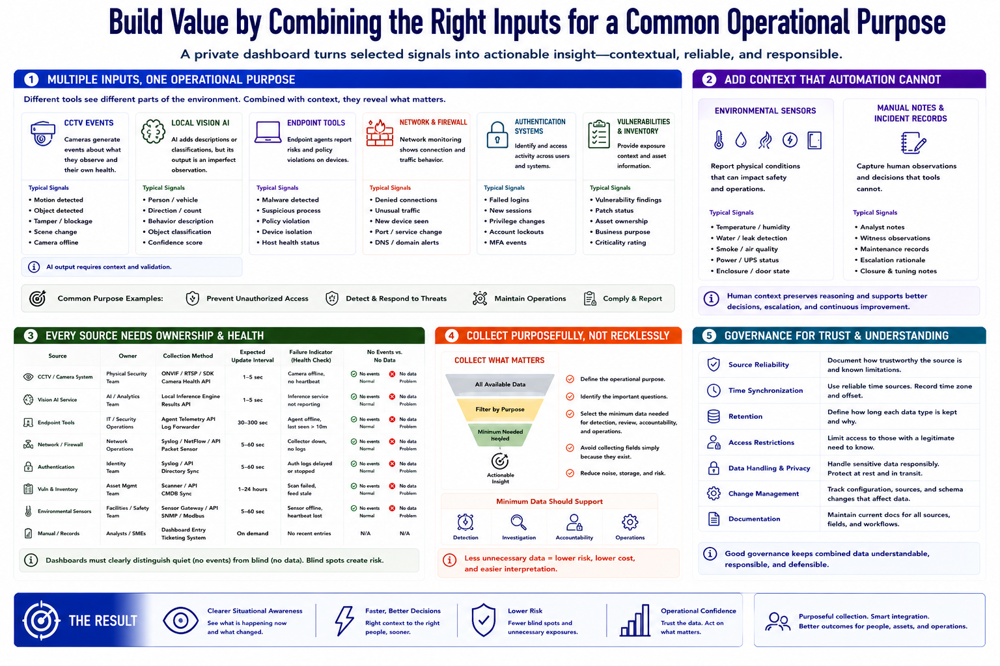

Data Sources and Inputs
Connecting to LMS... Progress: in progress

Narration
A private dashboard becomes valuable by combining selected inputs around a common operational purpose. CCTV events may provide motion, object, tamper, or camera-health signals. Local vision AI can add descriptions or classifications, but its output should be treated as an imperfect observation that requires context.
Endpoint tools may report malware, suspicious processes, policy violations, or device isolation. Firewalls and network monitoring can contribute denied connections, unusual traffic, new devices, and service changes. Authentication systems can show failed logins, new sessions, privilege changes, and account lockouts.
Vulnerability findings and asset inventory add exposure context. An alert involving an internet-facing, unpatched asset may deserve different priority than the same event on an isolated test system. Inventory data should identify ownership, business purpose, location, and criticality without becoming an uncontrolled repository of sensitive details.
Environmental sensors can report temperature, water, smoke, power, enclosure state, or other safety-relevant conditions. Manual notes and incident records capture observations that automated tools cannot. They also preserve the reasoning behind escalation, closure, and tuning decisions.
Each source needs an owner, collection method, expected update interval, and failure indicator. The dashboard should distinguish no events from no data. A quiet sensor may be normal; a disconnected collector may create a dangerous blind spot.
Collect purposefully. Do not ingest every available field simply because it exists. Prefer the minimum data needed for detection, review, accountability, and legitimate operations. Document source reliability, time synchronization, retention, and access restrictions so combined data remains understandable and responsibly handled.